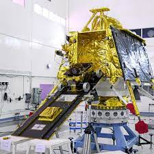

About ISRO
The Indian Space Research Organisation (ISRO) is the space agency of the Government of India, responsible for the nation's space research and exploration activities. It was founded on August 15, 1969, with the vision to harness space technology for various national development purposes, including communication, Earth observation, scientific research, and satellite-based navigation. ISRO has achieved numerous milestones and accomplishments over the years, making India a significant player in the global space arena. Some key highlights of ISRO's achievements include:
- Mars Orbiter Mission (Mangalyaan): In 2013, ISRO successfully launched its Mars Orbiter Mission, making India the fourth space agency to reach Mars orbit and the first to do so on its maiden attempt.
- Chandrayaan Missions:ISRO has conducted multiple lunar exploration missions, with Chandrayaan-1 being the first in 2008. Chandrayaan-2, launched in 2019, included an orbiter, lander, and rover to further explore the Moon's surf
- Satellite Launch Capability: ISRO has developed a reliable and cost-effective satellite launch system. The Polar Satellite Launch Vehicle (PSLV) and the Geosynchronous Satellite Launch Vehicle (GSLV) are the primary launch vehicles used to place satellites into various orbits.
- Navigation:ISRO developed the Indian Regional Navigation Satellite System (IRNSS), also known as NavIC, to provide accurate positioning and timing information over India and the surrounding region.
- Remote Sensing:ISRO operates a fleet of Earth observation satellites that provide valuable data for various applications, including agriculture, disaster management, urban planning, and environmental monitoring.
- Communication:ISRO's communication satellites support telecommunications, broadcasting, and broadband connectivity services across the country.
- International Collaborations: ISRO has collaborated with various space agencies and organizations worldwide, including NASA, ESA, and Roscosmos, for joint missions, research, and technology sharing.
- Gaganyaan Mission: ISRO is working towards sending Indian astronauts, known as "Gagannauts," into space as part of its Gaganyaan mission, which aims to establish human spaceflight capabilities.
Key Achievements
- Launch of Chandrayaan-1
- Mars Orbiter Mission (Mangalyaan)
- Launch of record-breaking satellites in a single mission
- Aryabhata Satellite (1975)
- SLV-3 Launch (1980)
- Polar Satellite Launch Vehicle (PSLV)
- Chandrayaan-2 (2019)
Gallery
